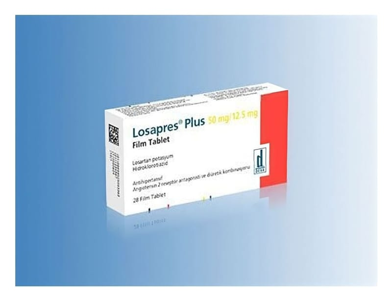

Losapres Plus 50 mg/12.5 mg Film Kaplı Tablet

Ne için kullanılır
KT · Bölüm 1LOSAPRES PLUS, anjiyotensin II reseptör blokörü olan losartan ve bir idrar söktürücü (diüretik) olan hidroklorotiyazid kombinasyonudur. Anjiyotensin II, vücutta üretilen, kan damarlarındaki reseptörlere bağlanan ve onların sıkışmasını sağlayan bir maddedir. Bu da kan basıncında artışa neden olur. Losartan, anjiyotensin II’nin bu reseptörlere bağlanmasını önler; kan damarlarında gevşemeye ve kan basıncında düşmeye neden olur. Hidroklorotiyazid böbreklerden daha fazla su ve tuz geçişini sağlar. Bu da kan basıncının düşmesine yardım eder. Her bir film kaplı tablet, 50 mg losartan potasyum ve 12,5 mg hidroklorotiyazid içerir.
LOSAPRES PLUS, 28 adet film kaplı tablet içeren blister ambalajlarda takdim edilmektedir. Sarı renkli, film kaplı tabletlerdir.
LOSAPRES PLUS, aşağıdaki durumlarda kullanılmaktadır. LOSAPRES PLUS, tek başına losartan veya hidroklorotiyazid ile yeterince kan basıncı kontrol altına alınamayan hastalarda sebebi bilinmeyen yüksek kan basıncının (esansiyel hipertansiyon) düşürülmesinde kullanılır. LOSAPRES PLUS, yüksek kan basıncı (hipertansiyon) ve kalbin sol odacığı kalınlaşmış (sol ventrikül hipertrofisi) olan hastalarda, hastalanma ve ölüm riskini azaltmak için kullanılır. LOSAPRES PLUS yüksek kan basıncı (hipertansiyon) ve kalbin sol odacığı kalınlaşmış (sol ventrikül hipertrofisi) olan hastalarda inme (felç) riskini azaltmak için kullanılır, ancak bu fayda siyah ırka mensup hastalar için geçerli değildir.